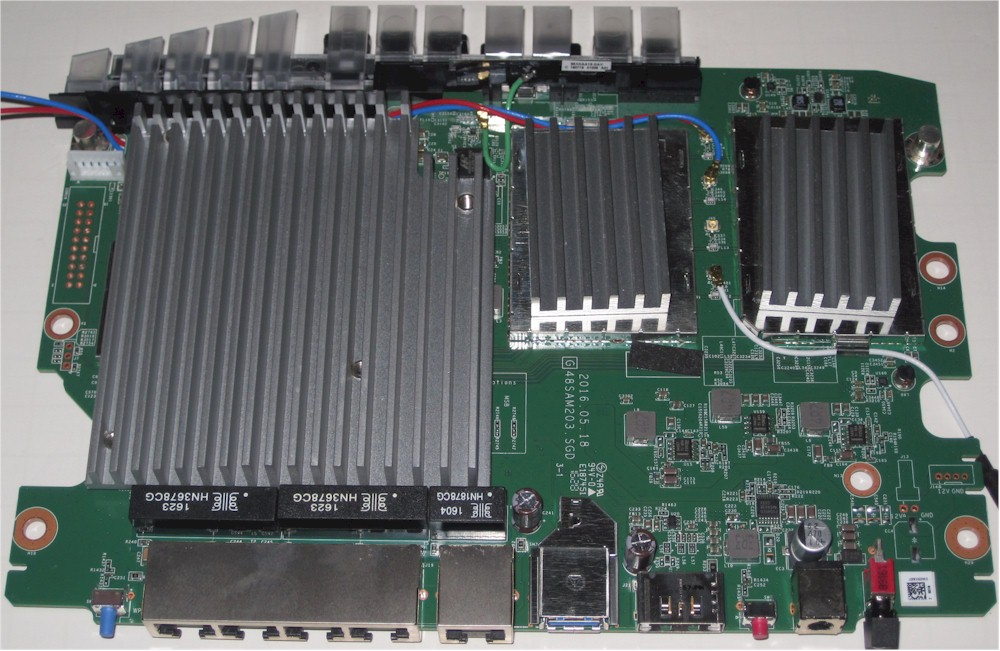

SSH Comment Injection in OpenWRT

OpenWRT is open source router and Wi-Fi access point software. LuCI is the web-based configuration interface for OpenWRT; one of its features is the ability to import SSH keys. Instead of OpenSSH, OpenWRT uses Dropbear, an SSH server implementation optimized for embedded systems1.
OpenSSH 8.2, released Feb. 14th, 2020, added support for new FIDO public key types, such as “ecdsa-sk” and “ed25519-sk”2. I wanted to see if Dropbear supported these new key types. It was during this time that I discovered a persistent XSS vector in LuCI.
At the time of publication, OpenWRT LuCI failed to properly sanitize OpenSSH public key comments.
By specifying markdown in the place of an SSH key comment, you could embed scripts within LuCI,
which would be executed upon navigation to the System -> Administration settings page.
I emailed Jon from the OpenWRT team; they pushed a patch the next day34. After getting written permission from the OpenWRT (via email), I filed for a CVE. I was assigned CVE-2022-41435567.
SSH comment injection presents a unique attack vector; it has nothing to do with the security of assymetric crypto or the SSH protocol. But it is a source of user-provided input that should be untrusted and properly sanitized.
Thanks to the OpenWRT team for the quick response time, and thanks for contributing to open source ❤️📡
References
-
Dropbear (Nov 14, 2022). “Dropbear homepage”. Dropbear. Archived from the original on May 30, 2023. Retrieved May 30, 2023. ↩︎
-
OpenSSH (Feb 14, 2020). “OpenSSH 8.2 release notes”. OpenSSH. Archived from the original on May 30, 2023. Retrieved May 30, 2023. ↩︎
-
OpenWRT (May 02, 2023). “OpenWRT developer guide, security, vulnerability reporting”. OpenWRT. Retrieved May 30, 2023. ↩︎
-
GitHub. “OpenWRT LuCI commit: luci-mod-system: sshkeys.js: prevent XSS through pubkey comments”. ↩︎
-
MITRE (Sep 26, 2022). “MITRE CVE-2022-41435”. Archived from the original on May 30, 2023. Retrieved May 30, 2023. ↩︎
-
NIST (Nov 04, 2022). “NIST CVE-2022-41435”. ↩︎
-
GitHub. “librick gist, CVE-2022-41435”. GitHub. Archived from the original on May 30, 2023. Retrieved May 30, 2023. ↩︎